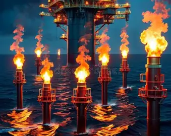
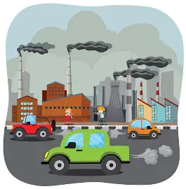
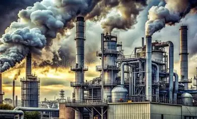
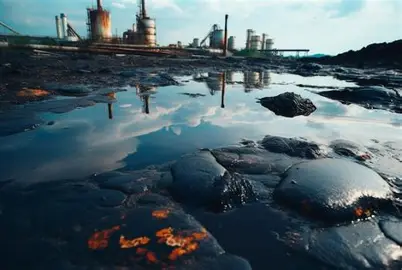
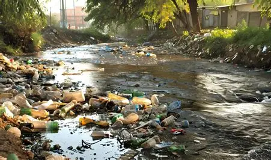
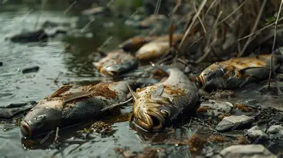
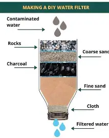

WEEK 9: ENVIRONMENTAL POLLUTION
9.1 Meaning of Pollution
Pollution is the addition of harmful substances to the environment (air, water or soil) that makes it unsafe or unfit for living things.
A pollutant is any substance that causes pollution.
Types of pollution: air, water, soil (land), noise and radioactive pollution. We shall study the first three in this unit.
9.2 Air Pollution
Air pollution is the contamination of the air with harmful gases, smoke, dust and other substances.
Causes:
- Burning of fuels in vehicles and generators, giving carbon monoxide, carbon dioxide and smoke.
- Industrial smoke and gases from factories and refineries.
- Bush burning and burning of refuse.
- Gas flaring in oil-producing areas.
- Cigarette smoking.
- Dust from construction sites, harmattan and unpaved roads.
- Volcanic eruptions (natural cause).
- Aerosol sprays and fumes from chemicals and paints.
- Cooking with firewood and charcoal in poorly ventilated places.
Consequences (effects):
- Respiratory problems : Includes coughing, asthma, bronchitis, lung disease.
- Eye irritation.
- Acid rain : Includes gases like sulphur dioxide and nitrogen oxides dissolve in rain, destroying crops, buildings and roofing sheets (corrosion) and killing fish.
- Global warming and climate change : Includes gases like carbon dioxide trap heat, raising the Earth's temperature.
- Depletion of the ozone layer : It is caused by CFC gases.
- Poor visibility (smog and haze), causing accidents.
- Damage to plants and animals.
- Death from poisoning, e.g. carbon monoxide from a generator in a closed room.
Control of air pollution:
- Plant trees (afforestation) to absorb carbon dioxide.
- Stop bush burning and open refuse burning.
- Use clean energy (solar, wind, gas).
- Maintain vehicles and generators regularly; do not use smoky vehicles.
- Fix filters and chimneys in industries.
- Stop gas flaring.
- Make and enforce laws against air pollution.
- Avoid smoking.
- Keep generators outside the house, never in closed rooms.
- Educate people about the dangers of air pollution.



Soil Pollution
Soil pollution is the addition of harmful substances to the soil that reduces its quality and makes it unfit for plants and animals.
Causes:
- Dumping of refuse, plastics, nylon and rubbish.
- Oil spills (e.g. from pipelines and oil wells).
- Excessive use of chemical fertilizers, pesticides and herbicides.
- Industrial chemical waste.
- Mining activities.
- Acid rain.
- Open defecation and improper sewage disposal.
Effects:
- Reduces soil fertility and crop yield.
- Kills useful soil organisms (earthworms, bacteria).
- Contaminates underground water.
- Causes diseases when people eat contaminated crops.
- Poor plant growth and erosion.
- Ugly and smelly environment.
Control:
- Proper refuse disposal and recycling.
- Avoid dumping nylon and plastics on land; use biodegradable materials.
- Use organic manure (compost) instead of too much chemical fertilizer.
- Treat industrial waste before disposal.
- Clean up oil spills quickly.
- Build proper toilets and treat sewage.
- Practise crop rotation and cover cropping.
- Educate people and enforce environmental laws.


9.4 Water Pollution
Water pollution is the contamination of water bodies (rivers, streams, lakes, ponds, wells, seas) by harmful substances that make the water unsafe for use.
Causes:
- Dumping refuse and waste into rivers, streams and gutters.
- Discharge of untreated sewage and industrial waste.
- Oil spills from ships and oil wells.
- Washing clothes, bathing and washing cars in rivers.
- Chemicals, fertilizers and pesticides washed into water by rain (run-off).
- Open defecation near water sources.
- Acid rain.
- Mining and dredging.
Effects:

- Water-borne diseases: cholera, typhoid fever, dysentery, diarrhoea, guinea worm, bilharzia.
- Death of aquatic life: fish and other water organisms die due to poisonous chemicals and lack of oxygen.
- Water becomes smelly, coloured and unfit for drinking.
- Reduced water supply for home and farm use.
- Loss of income for fishermen.
- Water plants (algae) grow too much and block water bodies.
- High cost of treating water.
Control:
- Do not dump refuse or waste into water bodies.
- Treat sewage and industrial wastes before discharge.
- Provide proper toilets and prevent open defecation.
- Avoid oil spills; clean them quickly and punish offenders.
- Use fertilizers and pesticides carefully.
- Educate the public.
- Make and enforce laws against water pollution.
- Protect water sources by fencing and keeping animals away from them.
9.5 Water Purification
Water purification is the process of making water clean and safe to drink by removing dirt, germs and harmful substances.
Sources of water: rain, rivers, streams, lakes, wells, boreholes, springs, tap water.
Characteristics of safe (good) drinking water: colourless, odourless, tasteless, free from germs and harmful chemicals.
Methods of water purification at home:
-
Boiling
- Boil water vigorously for at least 10 minutes and allow it to cool.
- Advantage: Kills germs. Disadvantage: Does not remove dirt or chemicals; uses fuel.
-
Filtration
- Pass water through a clean cloth or a filter containing layers of sand, gravel and charcoal.
- Advantage: Removes dirt, particles and some germs.
-
Sedimentation (setting) and decantation
- Allow dirty water to stand until heavy particles settle at the bottom, then pour off the clear water gently.
-
Chlorination
- Add chlorine tablets or a small amount of bleach to kill germs. Used by water treatment plants.
-
Alum treatment (coagulation)
- Add alum to muddy water; it makes tiny particles stick together and sink faster.
-
Distillation
- Boil water and collect and cool the steam to get pure water. It removes germs, dissolved salt and dirt.
-
Solar disinfection (SODIS)
- Clear plastic bottles filled with water are placed in direct sunlight for 6 hours to kill germs.
-
Aeration : Allow the water to splash in the air to remove smell and add oxygen.
Stages in water treatment at the waterworks (municipal treatment):
- Collection and storage in a reservoir (dam).
- Screening (removing large objects).
- Addition of alum (coagulation).
- Sedimentation (settling of particles).
- Filtration (through sand and gravel beds).
- Chlorination (to kill germs).
- Storage in a tank and distribution through pipes.
Simple home filter (activity): Cut a plastic bottle in half and turn the top upside down into the bottom half. Inside the top, place layers (from bottom to top): cotton wool or cloth, charcoal, fine sand, coarse sand, gravel. Pour muddy water through and collect the cleaner water. Remember: this does not kill all germs, so boil the filtered water before drinking.
